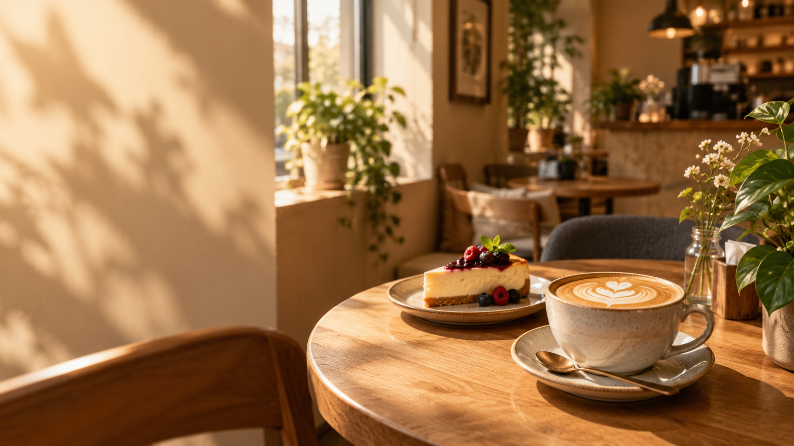

Кава з настроєм
Твій маленький щоденний ритуал.
ТВОЄ ЗАТИШНЕ МІСЦЕ У ЗОЛОЧЕВІ
Ароматна кава, щось солоденьке й кілька хвилин тільки для себе. Заходь створювати свої маленькі чудові моменти.

Є ранки для великих планів, а є — для повільної кави, улюбленого десерту й щирих розмов. У «Чудовому ранку» хочеться видихнути, озирнутися навколо й просто побути тут.
Завітай до нас ↗Твій маленький щоденний ритуал.
Десерт, який робить день теплішим.
Місце для зустрічей і пауз.
«Іноді для чудового дня
потрібна лише чашка кави.»
Це демонстраційний дизайн. Для фінальної версії найкраще додати справжні фото кав’ярні, її напоїв і десертів.
Ми чекаємо на тебе в історичному центрі Золочева. Збережи адресу й завітай у гості.